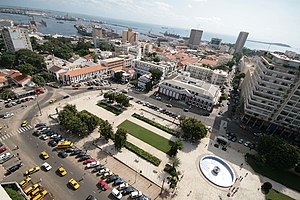

Economy of Senegal
|  | |
Trade organisations | AU, AfCFTA, ECOWAS, CEN-SAD, WTO |
|---|---|
Country group |
|
| Statistics | |
| Population | |
| GDP | |
| GDP rank | |
GDP growth |
|
GDP per capita | |
GDP per capita rank | |
GDP by sector |
|
| 2.2% (2021)[4] | |
Population below poverty line | |
| 38.1 medium (2018, World Bank)[7] | |
Labour force | |
Labour force by occupation |
|
| Unemployment | 15,7% (2017)[12] |
Main industries | agricultural and fish processing, phosphate mining, fertilizer production, petroleum refining, zircon, and gold mining, construction materials, ship construction and repair |
| External | |
| Exports | |
Export goods | fish, groundnuts (peanuts), petroleum products, phosphates, cotton |
Main export partners |
|
| Imports | |
Import goods | food and beverages, capital goods, fuels |
Main import partners | |
Gross external debt | |
| Public finances | |
| −3.6% (of GDP) (2017 est.)[5] | |
| Revenues | 4.139 billion (2017 est.)[5] |
| Expenses | 4.9 billion (2017 est.)[5] |
All values, unless otherwise stated, are in US dollars. | |
{kind=link}
{kind=link}
{kind=link}
{kind=link}
{kind=link}
{kind=link}
{kind=link}
{kind=link}
The economy of Senegal is driven by mining, construction, tourism, fishing and agriculture, which are the main sources of employment in rural areas, despite abundant natural resources in iron, zircon, gas, gold, phosphates, and numerous oil discoveries recently. Senegal's economy gains most of its foreign exchange from fish, phosphates, groundnuts, tourism, and services. As one of the dominant parts of the economy, the agricultural sector of Senegal is highly vulnerable to environmental conditions, such as variations in rainfall and climate change, and changes in world commodity prices.
Dakar, the former capital of French West Africa, is also home to banks and other institutions which serve all of Francophone West Africa, and is a hub for shipping and transport in the region.
Senegal also has one of the best developed tourist industries in Africa. Senegal's economy depends on foreign assistance. It is a member of the World Trade Organization.
The main obstacles to the economic development of the country are its great corruption with inefficient justice, very slow administrative formalities, and a failing education sector.[13]
History
[edit]The GDP per capita[14] of Senegal shrank by 1.30% in the 1960s. However, it registered a peak growth of 158% in the 1970s, and still expanded 43% in the turbulent 1980s. However, this proved unsustainable and the economy consequently shrank by 40% in the 1990s.
IMF and 1990s economic reforms
[edit]Since the January 1994 CFA franc devaluation, the International Monetary Fund (IMF), the World Bank, and other multilateral and creditors have been supporting the Government of Senegal's structural and sectoral adjustment programs. The broad objectives of the program have been to facilitate growth and development by reducing the role of government in the economy, improving public sector management, enhancing incentives for the private sector, and reducing poverty.
In January 1994, Senegal undertook a radical economic reform program at the behest of the international donor community. This reform began with a 50% devaluation of Senegal's currency, the CFA franc, which was linked at a fixed rate to the French franc. Government price controls and subsidies have been steadily dismantled as another economic reform.
This currency devaluation had severe social consequences, because most essential goods were imported. Overnight, the price of goods such as milk, rice, fertilizer and machinery doubled. As a result, Senegal suffered a large exodus, with many of the most educated people and those who could afford it choosing to leave the country.
After an economic contraction of 2.1% in 1993, Senegal made an important turnaround, thanks to the reform program, with a growth in GDP averaging over 5% annually during 1995–2004. Annual inflation had been pushed down to the low single digits.
As a member of the West African Economic and Monetary Union (WAEMU), Senegal is working toward greater regional integration with a unified external tariff and a more stable monetary policy. Senegal still relies heavily upon outside donor assistance, however. Under the IMF's Highly Indebted Poor Countries debt relief program, Senegal will benefit from eradication of two-thirds of its bilateral, multilateral, and private sector debt, contingent on the completion of privatization program proposed by the government and approved by the IMF.
Current state of economy
[edit]Two thirds of Senegalese expect living conditions to improve in the coming decades.[15]
External trade and investment
[edit]The fishing sector has replaced the groundnut sector as Senegal's export leader. Its export earnings reached U.S.$239 million in 2000. The industrial fishing operations struggle with high costs, and Senegalese tuna is rapidly losing the French market to more efficient Asian competitors.
Phosphate production, the second major foreign exchange earner, has been steady at about U.S.$95 million. Exports of peanut products reached U.S.$79 million in 2000 and represented 11% of total export earnings. Receipts from tourism, the fourth major foreign exchange earner, have picked up since the January 1994 devaluation. In 2000, some 500,000 tourists visited Senegal, earning the country $120 million.
Senegal's new Agency for the Promotion of Investment (APIX) plays a pivotal role in the government's foreign investment program. Its objective is to increase the investment rate from its current level of 20.6% to 30%. Currently, there are no restrictions on the transfer or repatriation of capital and income earned, or investment financed with convertible foreign exchange. Direct U.S. investment in Senegal remains about U.S.$38 million, mainly in petroleum marketing, pharmaceuticals manufacturing, chemicals, and banking. Economic assistance, about U.S.$350 million a year, comes largely from France, the IMF, the World Bank, and the United States. Canada, Italy, Japan, and Germany also provide assistance.
Senegal has well-developed though costly port facilities, a major international airport serving 23 international airlines, and direct and expanding telecommunications links with major world centers.
Indebtedness
[edit]With an external debt of U.S.$2,495 million,[16] and with its economic reform program on track, Senegal qualified for the multilateral debt relief initiative for Heavily Indebted Poor Countries (HIPC). Progress on structural reforms is on track, but the pace of reforms remains slow, as delays occur in implementing a number of measures on the privatization program, good governance issues, and the promotion of private sector activity.
Macroeconomic indicators show that Senegal turned in a respectable performance in meeting IMF targets in 2000: annual GDP growth increased to 5.7%, compared to 5.1% in 1999. Inflation was reported to be 0.7% compared to 0.8% in 1999, and the current account deficit (excluding transfers) was held at less than 6% of GDP.
Trade unions
[edit]Senegalese trade unions include The National Confederation of Senegalese Workers (CNTS) and its affiliate the Dakar Dem Dikk Workers Democratic Union (Dakar Public Transport workers), The Democratic Union of Senegalese Workers (UTDS), The General Confederation Of Democratic Workers Of Senegal (CGTDS) and the National Union of Autonomous Trade Unions of Senegal (UNSAS). Mean wages were $0.99 per man-hour in 2009.
Stock exchange
[edit]Senegal's corporations are included in the Bourse Régionale des Valeurs Mobilières SA (BRVM), a regional stock exchange serving the following eight West African countries, and located in Abidjan, Cote d'Ivoire.
Regional and international economic groupings
[edit]- Organization of African Unity (OAU)/Africa Union
- The Franc Zone
- The Lomé Convention
- Economic Community of West African States (ECOWAS)
- Union économique et monétaire Ouest Africaine (UEMOA)
- The African Groundnut Council
- the Organisation pour la mise en valeur du fleuve Sénégal
Statistics
[edit]{kind=link}
{kind=link}
- GDP (purchasing power parity)
U.S.$43.24 billion (2017 est.)
- GDP (official exchange rate)
U.S.$16.46 billion (2017 est.)
- GDP - real growth rate
7.2% (2017 est.)
- GDP - per capita (PPP)
$2,700 (2017 est.)
- GDP - composition by sector
agriculture: 16.9% industry: 24.3% services: 58.8% (2017 est.)
- Population below poverty line
46.7% (2011 est.)
- Household income or consumption by percentage share
lowest 10%: 2.5% highest 10%: 31.1% (2011)
- Inflation rate (consumer prices)
1.4% (2017 est.)
- Investment (gross fixed)
41% of GDP (2006 est.)
- Labor force
6.966 million (2017 est.)
- Labor force - by occupation
agriculture: 77.5% industry and services: 22.5% (2007 est.)
- Unemployment rate
48%; note - urban youth 40% (2001 est.)
- Distribution of family income - Gini index
40.3 (2011)
- Budget
- revenues
- U.S.$3.863 billion
- expenditures
- U.S.$4.474 billion (2017 est.)
- Public debt
61.2% of GDP (2017 est.)
- Industries
agricultural and fish processing, phosphate mining, fertilizer production, petroleum refining, construction materials, ship construction and repair
- Industrial production growth rate
8.4% (2017 est.)
- Electricity - production
3.673 billion kWh (2015 est.)
- Electricity - consumption
3.014 billion kWh (2015 est.)
- Electricity - exports
0 kWh (2016)
- Electricity - imports
0 kWh (2016)
- Oil - production
0 bbl/d (0 m3/d) (2004 est.)
- Oil - consumption
35,000 bbl/d (5,600 m3/d) (2007 est.)
- Natural gas - production
62 million cu m (2015 est.)
- Natural gas - consumption
60 million cu m (2015 est.)
- Natural gas - exports
0 cu m (2013 est.)
- Natural gas - imports
0 cu m (2013 est.)
- Current Account Balance
U.S.-$1.547 billion (2017 est.)
- Agriculture - products
peanuts, millet, maize, sorghum, rice, cotton, tomatoes, green vegetables; cattle, poultry, pigs; fish
- Exports
U.S.$2.546 billion (2017 est.)
- Exports - commodities
fish, groundnuts (peanuts), petroleum products, phosphates, cotton
- Exports - partners
Mali 14.8%, Switzerland 11.4%, India 6%, Cote dIvoire 5.3%, UAE 5.1%, Gambia, The 4.2%, Spain 4.1% (2017)
- Imports
U.S.$5.227 billion (2017 est.)
- Imports - commodities
food and beverages, capital goods, fuels
- Imports - partners
France 16.3%, China 10.4%, Nigeria 8%, India 7.2%, Netherlands 4.8%, Spain 4.2% (2017)
- Reserves of foreign exchange and gold
U.S.$151.8 million (31 December 2017 est.)
- Debt - external
U.S.$6.745 billion (31 December 2017 est.)
- Economic aid - recipient
U.S.$449.6 million (2003 est.)
- Currency (code)
Communaute Financiere Africaine franc (XOF); note - responsible authority is the Central Bank of West African States
- Exchange rates
Communaute Financiere Africaine francs (XOF) per US dollar - 617.4 (2017), 593.01 (2016), 593.01 (2015), 591.45 (2014), 494.42 (2013) 522.89 (2006), 527.47 (2005), 528.29 (2004), 581.2 (2003), 696.99 (2002). In 2006, 1 € = 655.82 XOF (West-African CFA), or 1 XOF = 0.001525 € / € to XOF / XOF to €
- Fiscal year
calendar year
Macro-economic trends
[edit]This is a chart of trend of gross domestic product of Senegal at market prices estimated by the International Monetary Fund with figures in millions of CFA Francs.
| Year | Gross Domestic Product | US Dollar Exchange | Inflation Index (2000=100) |
|---|---|---|---|
| 1980 | 652,221 | 211.27 CFA Francs | ? |
| 1985 | 1,197,462 | 449.32 CFA Francs | 66 |
| 1990 | 1,603,679 | 272.27 CFA Francs | 66 |
| 1995 | 2,309,091 | 499.15 CFA Francs | 93 |
| 2000 | 3,192,019 | 709.96 CFA Francs | 100 |
| 2005 | 4,387,230 | 526.55 CFA Francs | 107 |
Average wages in 2007 hover around $4–5 per day.
The following table shows the main economic indicators in 1980–2021. Inflation below 5% is in green[18]
| Year | GDP (in Bil. US$PPP) |
GDP per capita (in US$ PPP) |
GDP
(in bil. US$ nominal) |
GDP growth (real) |
Inflation rate (in Percent) |
Government debt (in % of GDP) |
|---|---|---|---|---|---|---|
| 1980 | 6.0 | 1,069 | 4.3 | n/a | ||
| 1981 | n/a | |||||
| 1982 | n/a | |||||
| 1983 | n/a | |||||
| 1984 | n/a | |||||
| 1985 | n/a | |||||
| 1986 | n/a | |||||
| 1987 | n/a | |||||
| 1988 | n/a | |||||
| 1989 | n/a | |||||
| 1990 | n/a | |||||
| 1991 | n/a | |||||
| 1992 | n/a | |||||
| 1993 | n/a | |||||
| 1994 | n/a | |||||
| 1995 | n/a | |||||
| 1996 | 71.0% | |||||
| 1997 | ||||||
| 1998 | ||||||
| 1999 | ||||||
| 2000 | ||||||
| 2001 | ||||||
| 2002 | ||||||
| 2003 | ||||||
| 2004 | ||||||
| 2005 | ||||||
| 2006 | ||||||
| 2007 | ||||||
| 2008 | ||||||
| 2009 | ||||||
| 2010 | ||||||
| 2011 | ||||||
| 2012 | ||||||
| 2013 | ||||||
| 2014 | ||||||
| 2015 | ||||||
| 2016 | ||||||
| 2017 | ||||||
| 2018 | ||||||
| 2019 | ||||||
| 2020 | ||||||
| 2021 |
See also
[edit]- Senegal
- Tourism in Senegal
- Agriculture in Senegal
- Communications in Senegal
- Transport in Senegal
- Economy of Africa
- CFA franc
- United Nations Economic Commission for Africa
References
[edit]- ^ "World Economic Outlook Database, April 2019". IMF.org. International Monetary Fund. Retrieved 29 September 2019.
- ^ "World Bank Country and Lending Groups". datahelpdesk.worldbank.org. World Bank. Retrieved 29 September 2019.
- ^ "Population, total - Senegal". data.worldbank.org. World Bank. Retrieved 25 January 2020.
- ^ a b c d e f "World Economic Outlook Database, April 2024". IMF.org. International Monetary Fund. Retrieved 15 May 2024.
- ^ a b c d e f g h i j k l m n "The World Factbook". CIA.gov. Central Intelligence Agency. Retrieved 1 February 2019.
- ^ "Poverty headcount ratio at $3.20 a day (2011 PPP) (% of population) - Senegal". data.worldbank.org. World Bank. Retrieved 25 January 2020.
- ^ "GINI index (World Bank estimate)". data.worldbank.org. World Bank. Retrieved 18 March 2019.
- ^ "Human Development Index (HDI)". hdr.undp.org. HDRO (Human Development Report Office) United Nations Development Programme. Retrieved 17 November 2022.
- ^ "Inequality-adjusted Human Development Index (IHDI)". hdr.undp.org. HDRO (Human Development Report Office) United Nations Development Programme. Retrieved 17 November 2022.
- ^ "Labor force, total - Senegal". data.worldbank.org. World Bank. Retrieved 25 January 2020.
- ^ "Employment to population ratio, 15+, total (%) (national estimate) - Senegal". data.worldbank.org. World Bank. Retrieved 25 January 2020.
- ^ "Le taux de chômage est estimé à 15,7% (T4 2017)", 27 December 2019.
- ^ The Economist, The African Century, March 28th 2020.
- ^ EarthTrends -> Economics, Business, and the Environment -> Variable -> Searchable Database Results: Economics, Business, and the Environment — GDP: GDP per capita, Units: Current US$ per person Archived January 31, 2008, at the Wayback Machine
- ^ The Economist, March 28th 2020, page 4.
- ^ 2006
- ^
 This article incorporates public domain material from The World Factbook (2024 ed.). CIA. (Archived 2014 edition.)
This article incorporates public domain material from The World Factbook (2024 ed.). CIA. (Archived 2014 edition.)
- ^ "Report for Selected Countries and Subjects". Retrieved 2018-09-07.
External links
[edit]- Economy of Senegal at Curlie
- (in French) Official Website: Republique du Senegal: MINISTÈRE DE L'ECONOMIE ET DES FINANCES Archived 2021-09-07 at the Wayback Machine.
- (in French) Annuaire des services administratifs, Republique du Senegal: MINISTÈRE DE L'ECONOMIE ET DES FINANCES.
- SENEGAL: CHINESE GOODS STIMULATE INFORMAL TRADING ECONOMY. Interpress Service, Publication Date: 28-AUG-07.
- Senegal. The World Factbook. Central Intelligence Agency.
- François Boye. A Retrospective Analysis of the Senegalese Economy, December 1990: Conference paper from School of Business, Montclair State University.
- Senegal latest trade data on ITC Trade Map
- The Senegalese Country Commercial Guide, published by the United States government to aid the export of US products to foreign markets, can be found at: Senegalese Country Commercial Guides.
- Wages of Senegalese workers
- Institute for Security Studies Senegal Economic Summary, 2001.
- Senegal Commerce Business and Trading: Republic of Senegal. (/)
- Senegal: Economy. Archived 2008-02-16 at the Wayback Machine Aggregated press articles at OneWorldAfrica
- African Studies, Columbia University: Senegal, Banking and investment information.
- West African Agricultural Market Observer/Observatoire du Marché Agricole (RESIMAO), a project of the West-African Market Information Network (WAMIS-NET), provides live market and commodity prices from fifty seven regional and local public agricultural markets across Benin, Burkina Faso, Côte d'Ivoire, Guinea, Niger, Mali, Senegal, Togo, and Nigeria. Sixty commodities are tracked weekly. The project is run by the Benin Ministry of Agriculture, and a number of European, African, and United Nations agencies.
- World Bank Summary Trade Statistics Senegal
Published works
[edit]- Amadou Sakho. Senegal's slide from "model economy" to "least developed country". Misanet.com / IPS (2001).
- Birahim Bouna Niang. A diagnosis of Senegal's public external debt, Provisional report. Republic of Senegal Ministry of Economy and Finance, Political Economy Unit (UPE). January 2003.
- Pamela Cox. The Political Economy of Underdevelopment: Dependence in Senegal. African Affairs, Volume 79, Number 317. pp. 603–605
- Maghan Keita. The Political Economy of Health Care in Senegal, Journal of Asian and African Studies, Vol. 31, No. 3-4, 145-161 (1996)
- John Waterbury and Mark Gersovitz, eds., The political economy of risk and choice in Senegal. Frank Cass & Co. Ltd, London, (1987) ISBN 0-7146-3297-X
- Christopher L. Delgado, Sidi Jammeh. The Political Economy of Senegal Under Structural Adjustment. School of Advanced International Studies, Johns Hopkins University (1991). ISBN 0-275-93525-6
- Cathy L. Jabara, Robert L. Thompson. Agricultural Comparative Advantage under International Price Uncertainty: The Case of Senegal. American Journal of Agricultural Economics, Vol. 62, No. 2 (May, 1980), pp. 188–198
- Peter Mark. Urban Migration, Cash Cropping, and Calamity: The Spread of Islam among the Diola of Boulouf (Senegal), 1900–1940. African Studies Review, Vol. 21, No. 2 (Sep., 1978), pp. 1–14
- Monique Lakroum. Le Travail Inegal: Paysans et Salaries Senegalais Face à la Crise des Annees Trente. Paris (1982).
- Ibrahima Thioub, Momar-Coumba Diop, Catherine Boone. Economic Liberalization in Senegal: Shifting Politics of Indigenous Business Interests. African Studies Review, Vol. 41, No. 2 (Sep., 1998), pp. 63–89
- Catherine Boone. Merchant Capital and the Roots of State Power in Senegal, 1930–1985, McGill, (1995).
- (in French) Jean Copans, Philippe Couty, Jean Roch, G. Rocheteau. Maintenance sociale et changement economique au Senegal I: Doctrine economique et pratique du travail chez les Mourides. Paris (1974).